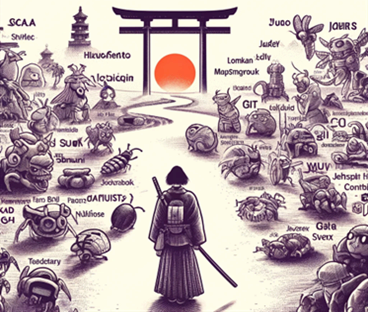

Costin Grigore
Hands-On Software Architect
costin.grigore@gmail.com / +40 740 720 002
Resume
Profile
I'm a software engineer with 24 years of experience in various industries and software types. I had all the roles that exist in a software project or startup from coder, to product owner, to CTO and CEO.
To succeed you need passion, vision, creativity, experience and a deep understanding of the issues that show up in software development. Embracing change and prediction is less costly than recovering.
I equally love and enjoy project startups, legacy project migrations or project recovery.
My preferred technology stack is Java + Scala + Vue, backed by agile eXtreme Programming practices.
Online
Hobbies
Reading: SF, philosophy, non-fiction
Taxonomies
Polymath
Skills & Roles
- Project & Team Leadership
- Software (Re)Architecture, (Re)Design, Migration
- eXtreme Programming: Agile, TDD, BDD, XP
- Product Owner, MVP
- Full-Stack Development, Engineering and Program Manager, CTO
- Continuous Integration and Delivery (CI/CD)
Work Experience
Software Architect – Revobet – Sports betting industry - revobet.com 2017-2024
Delivered, with the 10 people team, a low latency, multitenant, SAAS solution, feed agnostic with risk management, payments, bonus, help desk, translations and multiple other integrations. Technologies: Java 17, Kafka, Prometheus, MQ, Vue, responsive, mobile-first, Kubernetes.
Software Architect – ECAS-UUMDS - European Commission – DIGIT 2015-2016
Migrated legacy ECAS & UUMDS solutions to Docker Compose.
Software Architect – EESSI - European Commission – DG EMPL 2011-2014
Delivered working prototype and won competition with MS and IBM prototypes for a Distributed Flow Management solution: multi-hop, no size limitation, efficient multi-party end-to-end encryption: Java.
Technical Lead – Tech Finance - XOOM/Gemini Solutions 2006-2010
Delivered banking integration framework for money transfer for the Silicon Valley startup. Led a team of 12 senior developers: Java.
Java Engineer - Softwin, Alvarion, Redpoint 2000-2005
Multiple projects delivered. Research on DSP & AI.
Education
Master of Science in Computer Science
Polytechnic University of Bucharest - 2002-2003
Graduated with a perfect score 10/10 on the diploma exam.
Bachelor of Science in Computer Science, Systems Major (C3)
Polytechnic University of Bucharest - Computer Sciences – 1997-2002
Diploma exam grade: 10/10, Average grade over 5 years: 8.96
Baccalaureate Diploma, Intensive Computer Science
High School - 1994-1997
Achievements in the National Olympiad in Informatics: 2nd Place and Honorable Mentions
Main Areas of Expertise
Roles
- Team Lead, Lead Developer, Mentoring, Coaching, Internship 19y 3
- Business Development 9y 1
- Executive Operational & Strategic (business, finance, hiring, operation, marketing planning) 4y 0
- Technology Selection, Program Manager18y 4
- Project Management, Negotiator16y 9
- Product Owner, UX User Experience, Business Analyst 13y 1
- Architect, System Design, Application Design 22y 4
- Data Modeler, Database Design 19y 0
- Software Engineer, Programmer (+unit testing & TDD) 32y 4
- Build Configuration (maven, CI/CD – Continuous Integration/Delivery/Release) 19y 8
- Migration expertise (legacy systems migration) 19y 0
- Project Startup (create prototype, architecture, team) 17y 4
- Operations (docker, vagrant, virtualization, Kubernetes) 9y 1
- Quality Assurance (testing strategy, management) 10y 8
Project Types & Industry
- Sports Betting (low latency systems, Kafka, self-learning) 5y 0
- Integration (ESB, camel, REST, database, Message Queues, High Vol Ingestion, Kafka) 9y 1
- Insurance & Risk Management 1y 5
- Graph Databases (Arango DB) 4y 2
- Security (SAML, OAuth, OpenID, PKI, IAM, IDM, Keycloak) 5y 7
- Scraping, Crawling, Indexing, Data Extractors, Actors, Parallelism, Reactive 5y 8
- Distributed Workflow Management, Event Sourcing, Message Exchange, Journaling (integration between countries' systems) 7y 5
- Financial (online payment, money transfer systems, banking API, crypto) 8y 0
- Telecom (tracking key metrics of devices and equipment in telecom industry) 0y 9
- NMS (network management system, SNMP control) 1y 0
- R&D (Data Acquisition, Signal Processing, Biometric Signal, Artificial Intelligence) 0y 8
- ERP (financials, stocks, project management – database intensive) 4y 0
- Web (photo, ecommerce, webic, responsive) 14y 0
- Rich Client Applications (NMS, WebInfoControl, brompton configurator, bets) 7y 7
- Algorithms (production optimization planning, CS contests) 15y 8
- Others: rhyme and language dictionaries, taxi reporting 0y 5
- Mobile/Android (zdreanta) 1y 3
Preferred Development Style
- Agile Methodology 18y 0
- Test/Behavior Driven Development (TDD, BDD) 18y 0
- Pair Programming 14y 7
- Refactoring 18y 0
- UML description 20y 0
- Continuous integration and Delivery 16y 3
- Objectual/Declarative/Functional/Aspect Programming Paradigms 24y 2
- Rapid Development (RIA) 6y 9
Preferred Technology Stack
- Functional development: scala, reactive streaming, functional collections, vavr, monads 10y 7
- Scala, Akka(reactive), Slick 5y 7
- Java, Spring Framework, Hibernate & JPA, JUnit, SQL, lombok, mapstruct, jOOQ 17y 6
- UX, Vue, vuetify, quasar, material design, typescript 6y 5
- Databases: posgres, h2, mysql, oracle, SQL Server 14y 4
- NoSql Database: graph, arangodb, document database 4y 5
- Bootstrap(responsive), JQuery, CSS3, javascript, HTML 16y 7
- Regex, JSoup, XSLT, json, yml 11y 5
- Maven, gradle, eclipse, subversion/git 17y 7
- Jenkins, jira, gocd, gitlab, github, gocd 11y 2
- Docker, vagrant, k9s, kubernetes 5y 6
- Shell (linux,unix,osx) 11y 8
- Android 2y 1
Great Expertise in Obsolete Technologies :-)
- XML & WS: XML, XSD, WSDL, SOAP 11y 7
- UI: GWT, Spring MVC, playframework 10y 3
- SBT, Ant, shell(linux,unix,osx) 7y 8
- C, C++ 5y 0
- perl, PHP 1y 7
- Oracle Designer 2y 5
Self-Portrait
Books that I Love
- Ron Jeffries – The Nature of Software Development
- Andrew Hunt, David Thomas - Pragmatic Programmer
- Steve McConnell – Code Complete 2
- Joel Spolsky - Smart and Gets Things Done
- Kent Beck - Test Driven Development By Example
- Robert Martin – Clean Code
- Steve Krug – Don’t Make Me Think
- Tom DeMarco – The Deadline
- Martin Fowler - Refactoring Improving the Design of Existing Code
- Martin Fowler – Domain Specific Languages
- Frederick Brooks - The Mythical Person-Month Essays on Software Engineering
Interests
Professional: analysis, design, TDD, BDD, XP methodology, refactoring, pair programming, programming language paradigms, NoSQL databases, reactive programming, responsive design
Personal: literature, psychology, martial arts, theater, acting, SF, biology
Detailed Experience
{{#each experiences}}{{position}} – {{company}}
{{duration}}
{{#each projects}}{{{size}}}
{{project}}
- {{description}}{{{achievements}}}
- Add outline (not bookmarks) to the save as pdf in browser. Not possible yet.
- Add page number/total pages to a footer for print option.